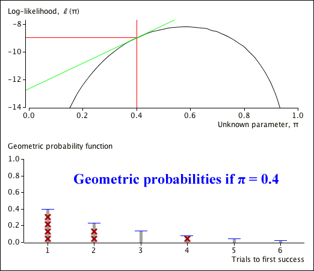
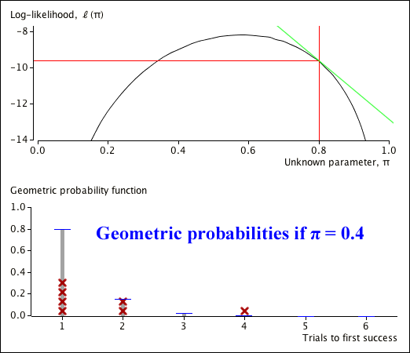

Random sample
If \(\{x_1, x_2, \dots, x_n\}\) is a random sample from a distribution with probability function \(p(x\;|\;\theta)\), then
\[ L(\theta \;|\;x_1, x_2, \dots, x_n) = \prod_{i=1}^n p(x_i \;|\; \theta) \]so the log-likelihood can be written as
\[ \ell(\theta) = \sum_{i=1}^n \log\left(p(x_i \;|\; \theta)\right) \]In the next two examples, maximum likelihood estimates must be found from random samples.
Question: Sex ratio of Siberian tigers
The probability of a newborn tiger being male is an unknown parameter, \(\pi\). A researcher recorded the number of males in a sample of \(n = 207\) litters, and these values are summarised in the following frequency table.
| Number of males | 0 | 1 | 2 | 3 |
|---|---|---|---|---|
| Frequency | 33 | 66 | 80 | 28 |
If it is assumed that the sexes of all tigers in a litter are independently determined, what is the maximum likelihood estimate of \(\pi\)?
(Solved in full version)
In the binomial example (and many others), the maximum likelihood and method of moments estimators are equal. However for some other models, they differ.
Question: Sample from a geometric distribution
If \(\{X_1, X_2, \dots, X_n\}\) is a random sample from a geometric distribution with probability function
\[ p(x) = \pi (1-\pi)^{x-1} \quad \quad \text{for } x = 1, 2, \dots \]what is the maximum likelihood estimate of \(\pi\)?
(Solved in full version)
The method is now illustrated with a numerical example.
Illustration
Consider a data set {1, 1, 1, 1, 2, 2, 4} which is assumed to be a random sample from a geometric distribution,
\[ X \;\; \sim \; \; \GeomDistn(\pi) \]The bar chart below shows geometric probabilities when \(\pi = 0.4\). The likelihood is the product of these probabilities for all the data values — i.e. with one term for each cross in the diagram. The log-likelihood is the logarithm of this.

Changing \(\pi\) to 0.8 results in the geometric probabilities below. Although the probabilities are higher for the four values that are "1", the probability of getting the value "4" is now very small. As a result, the product of the probabilities is lower than it might be and the likelihood is not maximised.

The value \(\pi = 0.583\) is a compromise that still has fairly high probabilities for the four 1's but has a larger probability of getting a 4 — this is the value that maximises the likelihood.